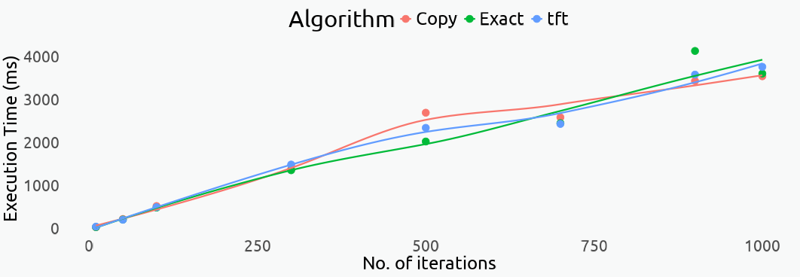

![]()
outcomes <- factor(c(1,3,5), labels = c("Mutual Cooperation", "Mutual Betrayal","Unmet Cooperation"))
choices <- factor(c(1,2), labels = c("Betray", "Cooperate"))
#> Player 1 choices (46% prob of betrayal, 24% prob cooperation)
p1_choice <- as.numeric(sample(choices,200,replace = T, prob = c(.459,.237)))
table(p1_choice)
#> p1_choice
#> 1 2
#> 132 68Not So Quickly!
Ideally, all humans would cooperate and live in harmony in a world where evil is not partaken. Unfortunately, that world doesn’t exist yet so we’re stuck with the question of cooperation. Should we always cooperate? Yes…not so quickly!.
As R. Axelrod1 put it:
1 The Evolution of Cooperation. Basic Books, Inc. New York, 1984
The Cooperation theory [here] is based upon an investigation of individuals who pursue their own self–interest wihtout the aid of central authority to force them to cooperate with each other. The reason for assuming self–interest is that it allows an examination of the difficult case when cooperation is not completely based upon a concern for others or upon the welfare of the groups as a whole.
The Prisoner’s Dilemma
This iterated version of the dilemma was presented as a hypothetical scenario by R. Axelrod:
Two bank robbers happen to meet. They decide to pull a job together. The cops nab them, but without enough evidence to convict. They need a confession. And they know both robbers are unlikely to talk, since if neither implicates the other, the cops can keep them in jail for only 30 days.
So they put the two in separate cells. They go to the first prisoner and say: “If you rat on your partner and he stays mum, we’ll let you go and he’ll do ten years.If you both rat on each other, you’ll both do eight years.” Then they go to the second prisoner and say the same thing.
The first prisoner thinks it over. “If he rats on me and I don’t rat on him, then I lose big-time. If I rat on him and he doesn’t rat on me, then I win big-time. Either way, the smart move is to rat on him. I’ll just hope he’s a sucker and doesn’t rat on me.” The second prisoner reasons the same way. So they rat on each other, and the cops get their two convictions. If the prisoners had cooperated, both would have gotten off easy. Instead, the rational pursuit of self-interest has put them both in a world of pain.
To win the game, at least one player must cooperate in the face of betrayal, otherwise both contestants would face unfavorable outcomes.
The Rules
The rules of Axelrod’s iterated prisoner’s dilemma:
- Two players play 200 matches against each other and against an algorithm that betrayed or cooperated at random.
- Players obtain three points for mutual cooperation, one for a mutual betrayal, and five for the player who betrays when the other cooperates.
The Path to Follow
I’ll attempt to provide four solutions to this problem. The first one will never be the first to betray but will copy the opponent’s previous choice; the second solution will betray in response to a cooperation five percent of the time; the third solution will cooperate first and then imitate each of player 1’s choices, and the last one will never betray first, but will retaliate in turn on every remaining move until the end of the game The official winning strategy was the following:
- In the first match-up, cooperate.
- In every match-up after that, do what the opponent did in the preceding match-up.
The Tit–for–Tat solution
I’ll imitate this strategy in the first algorithm and decide on the choices for player 1.
First, I’ll assign values to the three possible outcomes: Mutual cooperation is represented by the integer 3. Mutual betrayal is represented by 1, and Unmet cooperation is represented by 5. Player’s choices will be represented by betrayal equals 1 and cooperation equals 2.
Now I have to create a function for player 2 that chooses to cooperate on the first attempt, and copies player 1’s choice on subsequent ones. To do this, I have to iterate over each of player 1’s choice, and store player 2’s replies in a new vector.
To determine the choice order, I’ll create a vector of length 2 with player 1’s original choice and subtract 1 from that choice to obtain the alternative. To create the vector of choices of length n, I’ll append player 1’s original choice to a vector of length n-1 to make sure the first choice is always in position 1 p1_choice[1]. The resulting vector will be of length n.
To create the vector or player 2’s choices using the tit–for–tat algorithm, I’ll create a vector of length n equal to p1_choice. The first choice will always be cooperation, and all subsequent choices will be player 1’s previous response p1[ i -1].
Always remember to initialize vectors and perform operations outside the loop, if possible. Doing this will sometimes make your function much, much faster.
#> @rounds: number of rounds or matches in one game
#> @prob: probability of betrayal and cooperation
#> @choice: first choice to start the game. Choice inversion will be applied if staring choice = 1
#> @replace: sampling with replacement based on choice order. A vector of length 2
tit.for.tat <- function(rounds,
prob,
choice,
replace = TRUE){
#Check arguments
stopifnot({
is.integer(rounds)
is.double(prob)
is.logical(choice)
is.logical(replace)})
choice_order <- c(choice,1 - choice)
n <- rounds -1
# Choice inversion if choice = 1
if(choice_order[1] == 1){
inv.prob <- c(prob[2],prob[1])
p1 <- c(choice,sample(choice_order,size = n,replace = replace,prob = inv.prob))
} else{
p1 <- c(choice,sample(choice_order,size = n,replace = replace,prob = prob))
}
p2 <- numeric(length(p1))
p2[1] <- 1
for(i in 2:length(p1)){
p2[i] <- p1[i -1]
}
return(p2)
}
table(tit.for.tat(200,prob = c(.459,.237), choice = 0, replace = T))
#>
#> 0 1
#> 124 76The Backstabber Prober
The only difference between Tit–for–Tat and the IBP2 is that we’re adding a random element that will cause player 2 to betray player 1 when faced with a cooperative response. Player 2 will always cooperate on the first round, but the algorithm will be less predictable than the previous one. Not to spoil it, but I think this one will not do as well as Tit–for–Tat.
2 This strategy follows the Joss strategy featured in the 1984 book by R. Axelrod
3 in theory, this should happen 5% of the time for the uniform distribution
To implement the random component needed to defect on 5% of cooperative responses, I will identify each time player 1 chooses to cooperate and then defect when randomly generated number from the uniform distribution is less than or equal to .053. If the randomly generated number is greater than my default, I’ll revert back to the tit–for–tat strategy.
#> @prob: probability of betrayal and cooperation
#> @default: percentage of cooperative responses on which player 2 betrays player 1
prober <- function(rounds,
prob,
choice,
default,
replace = TRUE){
#Check arguments
stopifnot({
is.integer(rounds)
is.double(prob)
is.logical(choice)
is.double(default)
is.logical(replace)})
choice_order <- c(choice, 1 - choice)
n <- rounds - 1
if(choice_order[1] == 1){
inv.prob <- c(prob[2],prob[1])
p1 <- c(choice,sample(choice_order,size = n,replace = replace,prob = inv.prob))
} else{
p1 <- c(choice,sample(choice_order,size = n,replace = replace,prob = prob))
}
p2 <- numeric(length(p1))
p2[1] <- 1
for (i in 2:length(p1)) {
if (p1[i - 1] == 1) {
if (runif(1) < default) { # % chance to switch from 1 to 0
p2[i] <- 0
} else {
p2[i] <- p1[i - 1]
}
} else {
p2[i] <- p1[i -1]
}
}
return(p2)
}
table(prober(200,prob = c(.459,.237), choice = 0, default = .05, replace = T))
#>
#> 0 1
#> 133 67The Corteous Cat
A less glorious but more common solution is to simply imitate each of player 1 moves to a T. Player 2 will never cooperate first unless player 1 chooses to cooperate. This copy cat algorithm is looking at the current round and copying the first player’s moves. It is not concerned with the previous moves.
copy.cat <- function(rounds,
prob,
choice,
replace = TRUE){
#Check arguments
stopifnot({
is.integer(rounds)
is.double(prob)
is.logical(choice)
is.logical(replace)})
choice_order <- c(choice, 1 - choice)
n <- rounds - 1
if(choice_order[1] == 1){
inv.prob <- c(prob[2],prob[1])
p1 <- c(choice,sample(choice_order,size = n,replace = replace,prob = inv.prob))
} else{
p1 <- c(choice,sample(choice_order,size = n,replace = replace,prob = prob))
}
p2 <- numeric(length(p1))
p2[1] <- 1
for(i in 2:length(p1)){
if(p1[i] == 1){
p2[i] <- 1
} else {
p2[i] <- 0
}
}
return(p2)
}
table(copy.cat(200,prob = c(.459,.237), choice = 0, replace = T))
#>
#> 0 1
#> 124 76The Squirrel’s Revenge
The last algorithm will not play nice on the first round and will exact revenge on player 1 until the game is over4. This player is a more revengeful fellow. Let’s see how to implement it.
4 A copy of the aggressive Friedman’s algorithm
The key to achieve such vengeful results is to track when player 1 switches from betrayals to cooperation. Once we identify a cooperation, player 2 will no longer cooperate. I’ll only add one argument zero_switch to identify when player 1 chooses to defect. This logical vector will automatically switch to true inside the for loop, and will cause player 2 to defect on every move for the remainder of the game.
Something worthy of attention here is that if the probability of betrayal is higher than cooperation, the revenge algorithm will most likely never cooperate after the first couple of rounds. I’ll make sure to set a higher probability of cooperation to see the algorithm in action.
exact.revenge <- function(rounds,
prob,
choice,
replace = TRUE){
#Check arguments
stopifnot({
is.integer(rounds)
is.double(prob)
is.logical(choice)
is.logical(replace)})
choice_order <- c(choice, 1 - choice)
n <- rounds - 1
if(choice_order[1] == 1){
inv.prob <- c(prob[2],prob[1])
p1 <- c(choice,sample(choice_order,size = n,replace = replace,prob = inv.prob))
} else{
p1 <- c(choice,sample(choice_order,size = n,replace = replace,prob = prob))
}
p2 <- numeric(length(p1))
p2[1] <- 1
zero_switch <- FALSE
for(i in 2:length(p1)){
if(p1[i -1] == 0){
zero_switch <- TRUE
}
p2[i]<- ifelse(zero_switch,0,1)
}
return(p2)
}
table(exact.revenge(200,prob = c(.159,.437), choice = 1, replace = T))
#>
#> 0 1
#> 193 7Algorithm Perfomance
Now that all four algorithms are created, I’ll implement a function to evaluate the overall performance in total points after 200 rounds.
First, I have to create an outcome matrix to store the outcome of each choice combination. Then, I have to create a function that repeatedly compares algorithms over n number of games. To do this, I would have to update choice order for each game, if necessary; store total number of choices per game in two vectors, one for each player, create a list and evaluate choice outcome against the outcome matrix, and then sum each player’s score in the new list to find the total number of points per game. Lastly, I would have to calculate the average number of total points per game and compare algorithms this way.
#> @(...) arguments include:
#> @alg: algorithms to compare
#> @rounds: number of rounds in a game
#> @prob: probability of betrayal and cooperation.
#> @choice: starting choice.
#> @default: percentage of cooperative responses on which player 2 betrays player 1
#> @iter: how many games of `n` rounds should be played.
comp.alg <- function(alg,
iter = NULL,
rounds,
prob,
choice,
replace = TRUE,
...){
#Check arguments
stopifnot({
is.list(alg)
is.numeric(iter) && iter > 0})
out <- matrix(c(3,5,0,1), nrow = 2, byrow = TRUE)
rownames(out) <- c("P1.C","P1.B")
colnames(out) <- c("P2.C","P2.B")
play.game <- function(rounds,
prob,
choice,
default = NULL,
replace = TRUE) {
p1 <- do.call(alg[[1]],list(rounds = rounds,
prob = prob,
choice = choice,
replace = replace))
p2 <- do.call(alg[[2]],list(rounds = rounds,
prob = prob,
choice = choice,
replace = replace))
do.score <- function(P1,P2){
l1 <- list(P1,P2)
game_res <- data.frame(P1 = numeric(length(P1)),
P2 = numeric(length(P2)))
for(i in seq_along(l1[[1]])){
c1 <- l1[[1]][i]
c2 <- l1[[2]][i]
p1_score <- out[c1 + 1, c2 + 1]
p2_score <- t(out)[c1 + 1, c2 + 1]
game_res$P1[i] <- p1_score
game_res$P2[i] <- p2_score
}
return(game_res)
}
out_game <- do.score(p1,p2)
colSums(out_game)
}
boot.results <- list2DF(replicate(iter, play.game(rounds = rounds,
prob = prob,
choice = choice,
replace = replace), simplify = FALSE))
results <- as.matrix(do.call(rbind,boot.results))
return(as.data.frame(results))
}
#Let's test it
test <- comp.alg(c(copy.cat, tit.for.tat),
iter = 500,
rounds = 200,
prob = c(.345, .231),
choice = 0)
head(test)
#> P1 P2
#> 1 516 491
#> 2 510 465
#> 3 460 490
#> 4 506 461
#> 5 469 479
#> 6 482 477Code Benchmarking
First, I’ll look at the execution time and memory usage of my comp.alg function for several algorithms5. I’ll use the bench package to look at these two performance metrics. I’ll wrap my code in a function and measure its performance6
5 The comp.alg function is not currently dealing with the default argument of the prober algorithm.I’m thinking of a way to implement it in a naturally efficient way.
6 look up the bench::mark() function to see which metrics are calculated.
The second step is to use bench::pres() to supply my wrapper function with a grid of values to use as iterations. Laslty, I’ll visualize the the number of iterations vs. execution time across algorithms.
bench.comp.alg <- function(iter){
bench::mark(
"Copy" = comp.alg(c(copy.cat,exact.revenge),iter = iter, rounds = 200, c(.25,.32),choice = 0)$P1,
"Exact" = comp.alg(c(copy.cat,exact.revenge),iter = iter, rounds = 200, c(.25,.32),choice = 0)$P2,
"tft" = comp.alg(c(tit.for.tat,exact.revenge),iter = iter, rounds = 200, c(.25,.32),choice = 0)$P1,
time_unit = "ms",
check = FALSE
)
}
results <- bench::press(
iter = c(10,50,100,300,500,700,900,1000),
bench.comp.alg(iter)
)
#> A tibble: 24 × 14
#> expression iter min median `itr/sec` mem_alloc `gc/sec` n_itr n_gc total_time result memory time gc
#> <bch:expr> <dbl> <dbl> <dbl> <dbl> <bch:byt> <dbl> <int> <dbl> <dbl> <list> <list> <list> <list>
#> 1 Copy 10 31.3 32.6 30.6 6.51MB 40.8 6 8 196. <NULL> <Rprofmem [4,132 × 3]> <bench_tm [14]> <tibble>
#> 2 Exact 10 29.7 30.8 32.2 6.51MB 32.2 8 8 248. <NULL> <Rprofmem [4,131 × 3]> <bench_tm [16]> <tibble>
#> 3 tft 10 30.8 32.4 30.8 6.51MB 30.8 7 7 227. <NULL> <Rprofmem [4,131 × 3]> <bench_tm [14]> <tibble>
#> 4 Copy 50 207. 222. 4.40 32.55MB 14.7 3 10 681. <NULL> <Rprofmem [20,668 × 3]> <bench_tm [3]> <tibble>
#> 5 Exact 50 258. 262. 3.82 32.55MB 11.5 2 6 524. <NULL> <Rprofmem [20,806 × 3]> <bench_tm [2]> <tibble>
#> 6 tft 50 205. 266. 4.03 32.55MB 10.8 3 8 744. <NULL> <Rprofmem [20,808 × 3]> <bench_tm [3]> <tibble>
#> 7 Copy 100 576. 576. 1.74 65.09MB 12.2 1 7 576. <NULL> <Rprofmem [41,418 × 3]> <bench_tm [1]> <tibble>
#> 8 Exact 100 400. 411. 2.43 65.09MB 14.6 2 12 821. <NULL> <Rprofmem [41,400 × 3]> <bench_tm [2]> <tibble>
#> 9 tft 100 372. 390. 2.57 65.09MB 15.4 2 12 780. <NULL> <Rprofmem [41,461 × 3]> <bench_tm [2]> <tibble>
#> 10 Copy 300 1254. 1254. 0.798 195.27MB 10.4 1 13 1254. <NULL> <Rprofmem [123,916 × 3]> <bench_tm [1]> <tibble>
# ℹ 14 more rows
# ℹ Use `print(n = ...)` to see more rowsLet’s now visualize the performance of each algorithm using ggplot2.
library(ggplot2)
library(showtext)
# Customize fonts
font_add_google("Ubuntu","ubu")
showtext_auto()
text <- "ubu"
ggplot(results,
aes(iter,median, col = attr(expression,"description"))) +
geom_point(size = 4) +
geom_smooth(se = FALSE) +
labs(x = "No. of iterations",
y = "Execution Time (ms)",
colour = "Algorithm") +
#scale_color_manual(values = iter) +
theme_minimal() +
theme(legend.position = "top",
legend.title = element_text(family = text, size = 23),
legend.text = element_text(family = text, size = 18),
plot.background = element_rect(fill = "#f8f9f9",
color = "NA"),
axis.title = element_text(family = text, size = 18,
hjust = .5),
axis.text = element_text(family = text,size = 16),
panel.grid.major = element_blank(),
panel.grid.minor = element_blank()
)
Practical Implications
Among all the algorithms submitted to Axelrod, the top performer was Tit–for–tat because it was “nice”. Algorithms that always betrayed or were “sneaky” were more likely to end up in a state of conflict.
Here are the rules for strategic cooperation:
- Avoid unnecessary conflict by cooperating as long as your opponent does.
- If your opponent betrays you without provocation— respond in kind…once.
- Then forgive the betrayal, and cooperate again.
- Be clear and predictable so your opponent knows how you act and can plan accordingly.
Citation
For attribution, please cite this work as:
Monteagudo, JP. 2024. “The Iterated Prisoners’ Dilemma.”
June 12, 2024. https://www.jpmonteagudo.com/blog/2024/05/prisoners.